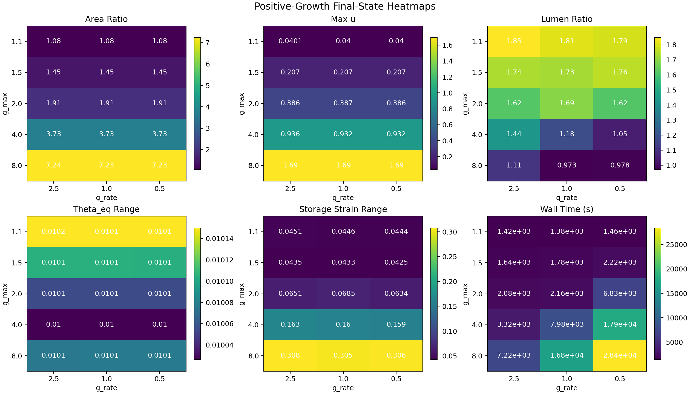
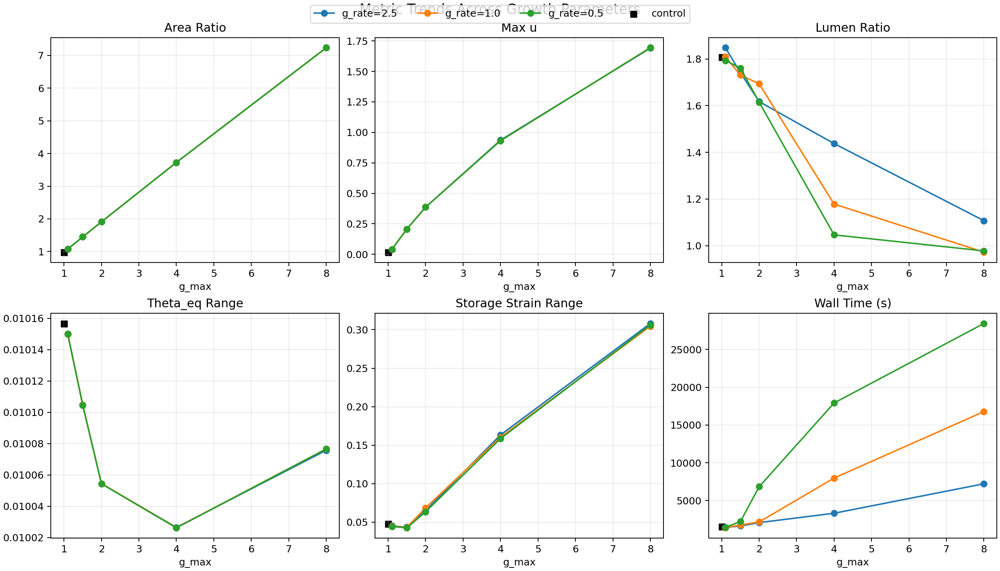
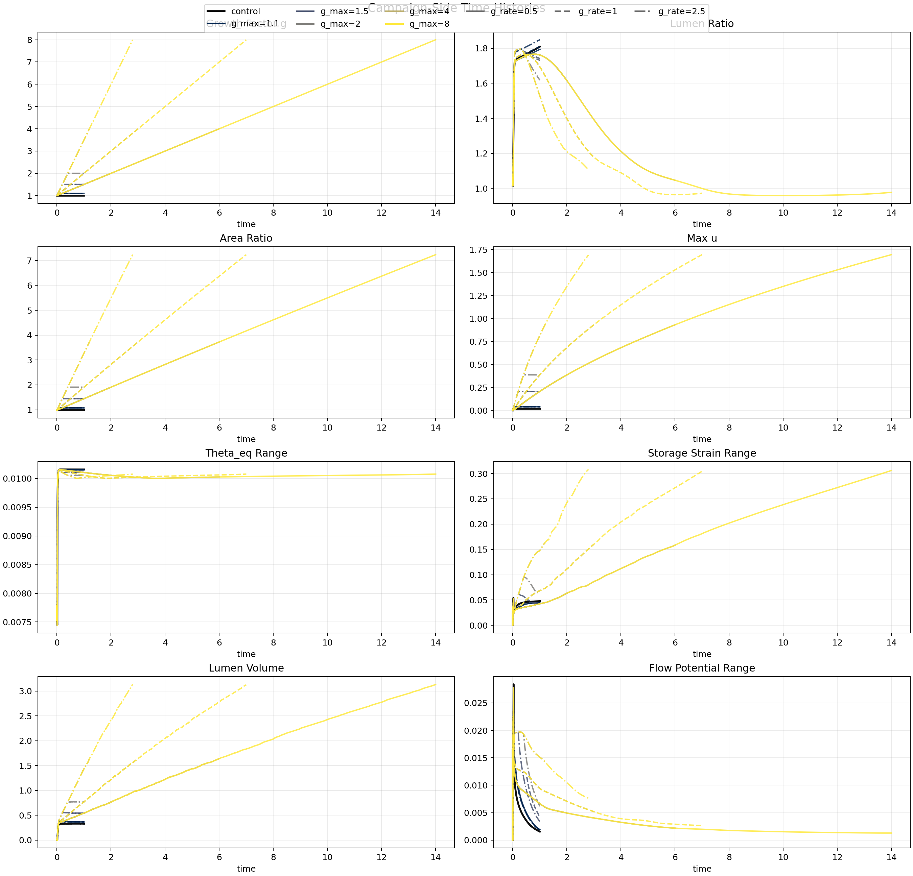
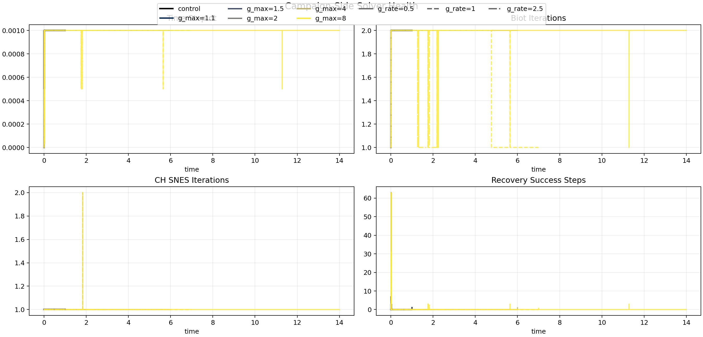
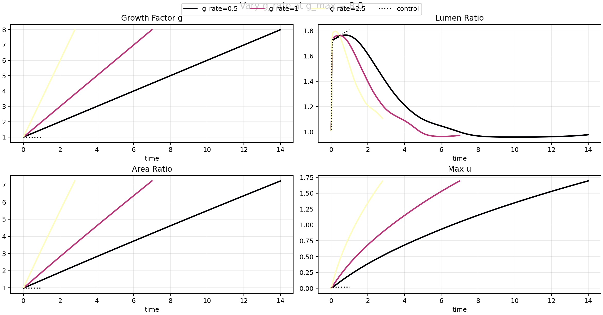
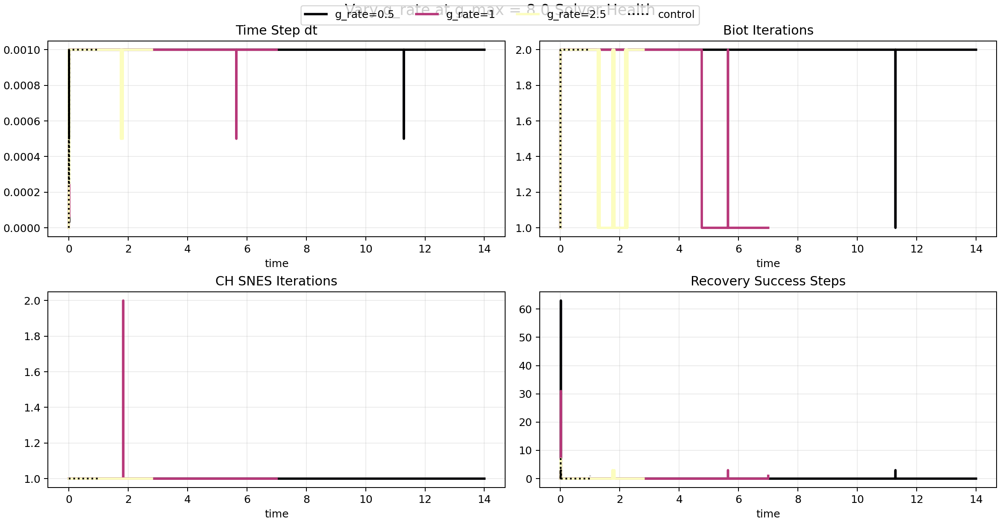
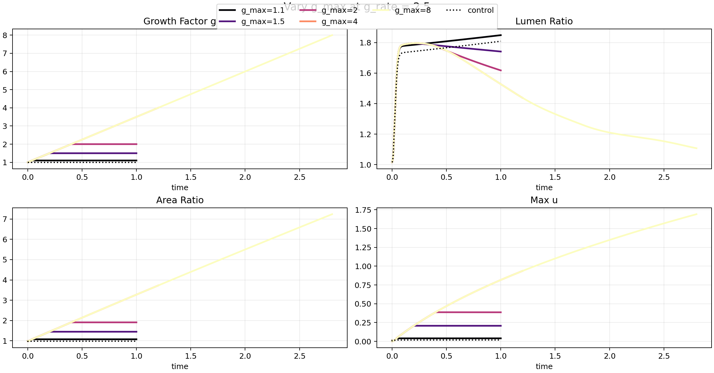
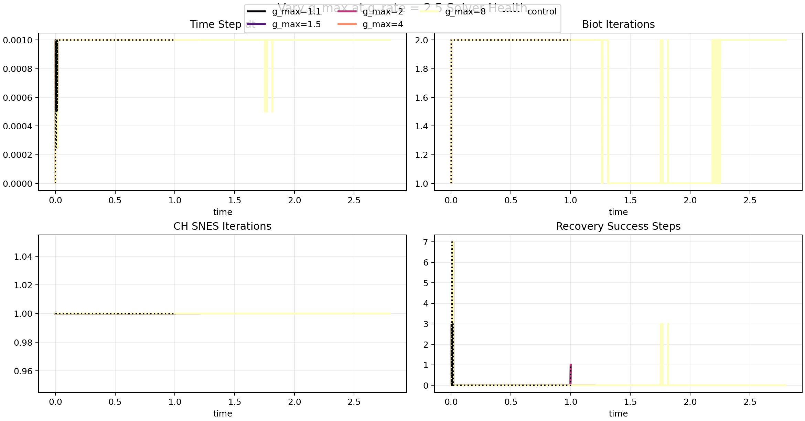

Promoted Study Surface
Canonical Disk Growth Campaign
Aggregate entrypoint for canonical-disk-growth-campaign-saturation-v1. This page reuses the packaged case reports already present in this
campaign root, adds cross-case summary artifacts, and keeps the fixed-mesh four-cardinal-lumen disk sweep reviewable from one place.
Coverage
16 packaged cases linked from this page.Control
canonical-disk-growth-gmax1p0-grate0p0Fastest Case
canonical-disk-growth-gmax1p1-grate1p0Slowest Case
canonical-disk-growth-gmax8p0-grate0p5Study Composition
This promoted bundle keeps the original short-horizon campaign intact where appropriate and folds in long-horizon saturation extensions only for the cases that required extended horizons.
- Cases not listed under promotion.case_overrides are copied from the original short-horizon t_end = 1.0 campaign root at output/canonical-disk-growth-campaign-v1/.
- The seven overrides below promote the long-horizon saturation pilots into the canonical study root while preserving the original 16-case fixed-mesh matrix and scenario identities.
- The report-side final-time check now accepts a small absolute floating-point residue, so the g_max = 8.0, g_rate = 0.5, t_end = 14.0 saturation case is treated as converged when the final accepted time lands at 13.999999999997684.
| Promoted Case | t_end | Source Package |
|---|---|---|
| canonical-disk-growth-gmax2p0-grate0p5 | 2 | output/canonical-disk-growth-gmax2p0-grate0p5-tend2p0-pilot/canonical-disk-growth-gmax2p0-grate0p5-tend2p0-pilot-gmax2p0-grate0p5 |
| canonical-disk-growth-gmax4p0-grate2p5 | 1.2 | output/canonical-disk-growth-gmax4p0-grate2p5-tend1p2-pilot/canonical-disk-growth-gmax4p0-grate2p5-tend1p2-pilot-gmax4p0-grate2p5 |
| canonical-disk-growth-gmax4p0-grate1p0 | 3 | output/canonical-disk-growth-gmax4p0-grate1p0-tend3p0-pilot/canonical-disk-growth-gmax4p0-grate1p0-tend3p0-pilot-gmax4p0-grate1p0 |
| canonical-disk-growth-gmax4p0-grate0p5 | 6 | output/canonical-disk-growth-gmax4p0-grate0p5-tend6p0-pilot/canonical-disk-growth-gmax4p0-grate0p5-tend6p0-pilot-gmax4p0-grate0p5 |
| canonical-disk-growth-gmax8p0-grate2p5 | 2.8 | output/canonical-disk-growth-gmax8p0-grate2p5-tend2p8-pilot/canonical-disk-growth-gmax8p0-grate2p5-tend2p8-pilot-gmax8p0-grate2p5 |
| canonical-disk-growth-gmax8p0-grate1p0 | 7 | output/canonical-disk-growth-gmax8p0-grate1p0-tend7p0-pilot/canonical-disk-growth-gmax8p0-grate1p0-tend7p0-pilot-gmax8p0-grate1p0 |
| canonical-disk-growth-gmax8p0-grate0p5 | 14 | output/canonical-disk-growth-gmax8p0-grate0p5-tend14p0-pilot/canonical-disk-growth-gmax8p0-grate0p5-tend14p0-pilot-gmax8p0-grate0p5
|
Artifacts
Campaign metadata stays at the root; compact joined science metrics live in the generated aggregate files below.
Heatmaps
Positive-growth cases only. The control remains separate because g_rate = 0 is not part of the positive matrix.

Trend Panels
Each line holds g_rate fixed while g_max varies. The control is marked separately.

Campaign-Side Time Histories
All packaged cases overlaid together. Color encodes g_max, line style encodes g_rate, and the control remains black for orientation.

Campaign-Side Solver Health
Accepted-step solver histories across the packaged campaign. Retry summaries stay in the tables and CSV/JSON exports so rejected attempts are not hidden.

Vary g_rate at g_max = 8.0
Focused comparison slice with rows ordered by g_rate and columns fixed to pf, p, theta, and u. The scalar fields are rendered on warped coordinates so deformation remains visible on every panel, while the slice shares one comparison viewport and one per-field color scale across all rows.


Rows top-to-bottom follow the order listed below.
| Row | Case | Links |
|---|---|---|
| g_rate=0.5 | canonical-disk-growth-gmax8p0-grate0p5 | package report · montage · row video |
| g_rate=1 | canonical-disk-growth-gmax8p0-grate1p0 | package report · montage · row video |
| g_rate=2.5 | canonical-disk-growth-gmax8p0-grate2p5 | package report · montage · row video |
{kind=link}
{kind=link}
{kind=link}
Vary g_max at g_rate = 2.5
Focused comparison slice with rows ordered by g_max and columns fixed to pf, p, theta, and u. The scalar fields are rendered on warped coordinates so deformation remains visible on every panel, while the slice shares one comparison viewport and one per-field color scale across all rows.


Rows top-to-bottom follow the order listed below.
| Row | Case | Links |
|---|---|---|
| g_max=1.1 | canonical-disk-growth-gmax1p1-grate2p5 | package report · montage · row video |
| g_max=1.5 | canonical-disk-growth-gmax1p5-grate2p5 | package report · montage · row video |
| g_max=2 | canonical-disk-growth-gmax2p0-grate2p5 | package report · montage · row video |
| g_max=4 | canonical-disk-growth-gmax4p0-grate2p5 | package report · montage · row video |
| g_max=8 | canonical-disk-growth-gmax8p0-grate2p5 | package report · montage · row video |
{kind=link}
{kind=link}
{kind=link}
{kind=link}
Case Table
Use the report links to open the original packaged per-case HTML pages.
| Case | Type | g_max | g_rate | Status | Error | ratio_final | area_ratio_final | max_u_final | theta_eq_range_final | storage_strain_range_final | lumen_total_volume | wall_time_seconds | biot_iter_max | ch_snes_max | dt_retry_max | dt_recovery_success_max | Report |
|---|---|---|---|---|---|---|---|---|---|---|---|---|---|---|---|---|---|
| canonical-disk-growth-gmax1p0-grate0p0 | control | 1 | 0 | packaged | 1.809 | 0.9839 | 0.01803 | 0.01016 | 0.04771 | 0.3311 | 1547 | 2 | 1 | 0 | 7 | open | |
| canonical-disk-growth-gmax1p1-grate2p5 | growth | 1.1 | 2.5 | packaged | 1.848 | 1.077 | 0.0401 | 0.01015 | 0.04514 | 0.3662 | 1421 | 2 | 1 | 0 | 7 | open | |
| canonical-disk-growth-gmax1p1-grate1p0 | growth | 1.1 | 1 | packaged | 1.809 | 1.077 | 0.04004 | 0.01015 | 0.04462 | 0.3674 | 1382 | 2 | 1 | 0 | 31 | open | |
| canonical-disk-growth-gmax1p1-grate0p5 | growth | 1.1 | 0.5 | packaged | 1.793 | 1.077 | 0.04001 | 0.01015 | 0.04436 | 0.3663 | 1465 | 2 | 1 | 0 | 63 | open | |
| canonical-disk-growth-gmax1p5-grate2p5 | growth | 1.5 | 2.5 | packaged | 1.741 | 1.449 | 0.2071 | 0.0101 | 0.04346 | 0.5438 | 1637 | 2 | 1 | 0 | 7 | open | |
| canonical-disk-growth-gmax1p5-grate1p0 | growth | 1.5 | 1 | packaged | 1.731 | 1.449 | 0.2071 | 0.0101 | 0.04326 | 0.5411 | 1777 | 2 | 1 | 0 | 31 | open | |
| canonical-disk-growth-gmax1p5-grate0p5 | growth | 1.5 | 0.5 | packaged | 1.761 | 1.449 | 0.2072 | 0.0101 | 0.04255 | 0.5424 | 2220 | 2 | 1 | 0 | 63 | open | |
| canonical-disk-growth-gmax2p0-grate2p5 | growth | 2 | 2.5 | packaged | 1.617 | 1.91 | 0.3865 | 0.01005 | 0.06507 | 0.7666 | 2078 | 2 | 1 | 0 | 7 | open | |
| canonical-disk-growth-gmax2p0-grate1p0 | growth | 2 | 1 | packaged | 1.694 | 1.91 | 0.3869 | 0.01005 | 0.06852 | 0.7696 | 2164 | 2 | 1 | 0 | 31 | open | |
| canonical-disk-growth-gmax2p0-grate0p5 | growth | 2 | 0.5 | packaged | 1.615 | 1.91 | 0.3864 | 0.01005 | 0.06345 | 0.7667 | 6829 | 2 | 1 | 0 | 63 | open | |
| canonical-disk-growth-gmax4p0-grate2p5 | growth | 4 | 2.5 | packaged | 1.438 | 3.725 | 0.9363 | 0.01003 | 0.1634 | 1.634 | 3318 | 2 | 1 | 0 | 7 | open | |
| canonical-disk-growth-gmax4p0-grate1p0 | growth | 4 | 1 | packaged | 1.179 | 3.726 | 0.932 | 0.01003 | 0.1603 | 1.64 | 7978 | 2 | 2 | 0 | 31 | open | |
| canonical-disk-growth-gmax4p0-grate0p5 | growth | 4 | 0.5 | packaged | 1.047 | 3.726 | 0.9315 | 0.01003 | 0.1585 | 1.64 | 1.792e+04 | 2 | 1 | 0 | 63 | open | |
| canonical-disk-growth-gmax8p0-grate2p5 | growth | 8 | 2.5 | packaged | 1.107 | 7.236 | 1.691 | 0.01008 | 0.3081 | 3.134 | 7218 | 2 | 1 | 0 | 7 | open | |
| canonical-disk-growth-gmax8p0-grate1p0 | growth | 8 | 1 | packaged | 0.9728 | 7.234 | 1.695 | 0.01008 | 0.3046 | 3.124 | 1.678e+04 | 2 | 2 | 0 | 31 | open | |
| canonical-disk-growth-gmax8p0-grate0p5 | growth | 8 | 0.5 | packaged | 0.9779 | 7.234 | 1.694 | 0.01008 | 0.3061 | 3.129 | 2.845e+04 | 2 | 1 | 0 | 63 | open |